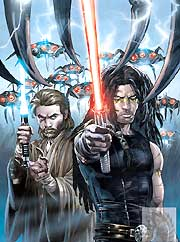

Forums galactiques > Taverne galactique : lieu de discussion informel > attaque après quelque heures de création du compte
| TICOJONA  28/04 ETU 11:06 | Seigneur vador je vous remercie quand même de ces quelques renseignements, je sais ce doit être lourd des-fois!! lol salutations |
juninhio28/04 ETU 11:27 | Seigneur vador je vous remercie quand même de ces quelques renseignements, je sais ce doit être lourd des-fois!! lol salutations |
maitre yoda 28/04 ETU 13:14  | Oh le beau double compte^^. Merci à tous de votre estime, sachez qu'elle est réciproque. |
TICOJONA28/04 ETU 13:19 | non yoda ce n'est pas un double compte, mais bien 2 personnes différentes, d'ailleurs je vais lui tirer les oreilles de faire du copier coller, lol |
juninhio28/04 ETU 13:46 | ne vous en faîte pas maitre yoda je suis une autre personne |
Seigneur vador 28/04 ETU 13:58 | Le respect est le contraire du pouvoir,il se mérite cher castor lapon... |
TICOJONA28/04 ETU 17:42 | Mon cher Seigneur vador effectivement le respect se mérite, mais il ne s'impose pas. a mon sens le respect et le pouvoir peuvent très bien s'entendrent tous dépends comment on les entretients et les préservent |
O'Shaserra 228/04 ETU 17:51 | Aller regarder les lois Ultrèmissimes et redite moi ça en façe... En fait, TICOJANA c'est Tico 1 ou je me goure ? |
vladok 28/04 ETU 18:46 | Je ne dirais qu'une chose, bizarre pour un ultreme mais bon : "Nous ne sommes pas ennemis, mais amis. Nous ne devons pas être ennemis. Même si la passion nous déchire, elle ne doit pas briser l'affection qui nous lie. Les cordes sensibles de la mémoire vibreront à nouveau dès qu'on les touchera. Elles résonneront au contact de ce qu'il y a de meilleur en nous" |
maitre yoda28/04 ETU 18:47 | Amen^^. |
vladok28/04 ETU 18:50 | Ce que j'aime avec les castors lapons, c'est leur sens du résumé ^^ |
Kaserkine 28/04 ETU 20:59 | Il faut dire que ça parle énormément ... Mais vous dîtes que vous n'êtes pas ennemi, mais je ne veux pas rentrer dans votre coalition et un de vos membres veut déjà ma peau ! |
Seigneur vador29/04 ETU 09:29 | Nous c'est tout le monde qui veut nous faire la peau,alors on fait la peau a tout le monde,c'est la logique... |
O'Shaserra 229/04 ETU 09:47 | Qu'est-ce qu't'à encore été dire Kas ? |
Forums galactiques > Taverne galactique : lieu de discussion informel > attaque après quelque heures de création du compte